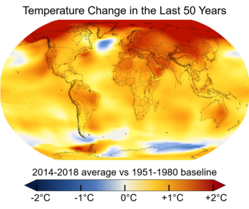

What's the temperature change the world is increasing by?
Scientists around the world have created climate models which are computer simulations of the climate system. Through rigorous testing, scientists have concluded that as the greenhouse gas concentration increases, so will the average surface temperature. Scientists have calculated that as the world continues to use fossil fuels, the average surface temperatures could rise between 2°C and 6°C by the end of the 21st century. In today's world, places all over America are experiencing all time hot weather, like of Alaska in July 2018 where it was 90 °F. Many cites have had dangerous weather like heat waves where it was deadly to be outside for too long in places like Arizona. The article has also said that the average temperature of the summers and winter will increase by 4.5°f by 2050. Additionally, winters will lose about 20-30 days. Rain and snowstorms will be more intense and more frequent in some places, and in other places will be less common and lighter.
>